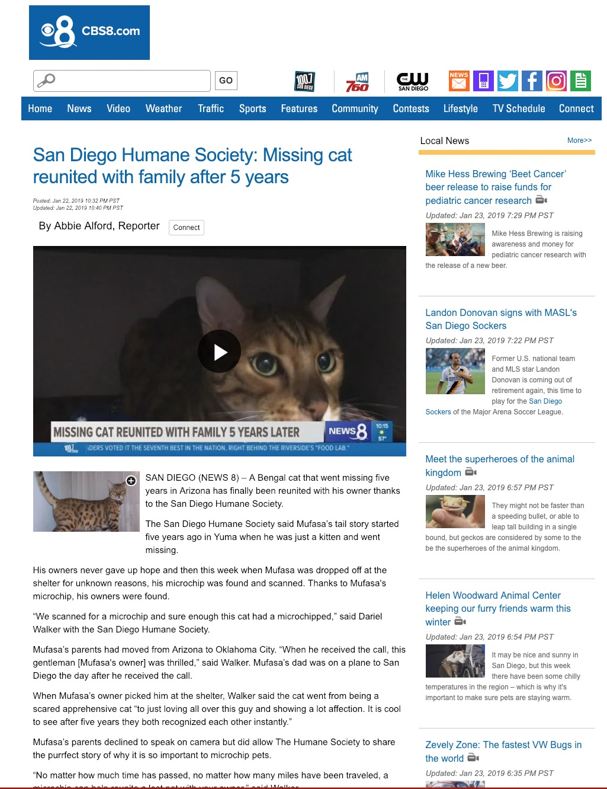

Instructions at http://wstyler.ucsd.edu/unix/. Register your account now!
We’re in the orthography, for better or for worse
We’re looking at unicode text data
We have to assume that non-written information is not recoverable
We’re now concerned with failures of understanding, not failures of transmission
üò≥
Next time, we’ll talk about how to get to our corpus
Then we’ll go into the nuts and bolts of how to look at corpora
Why is natural language data useful?
What are the characteristics of a language corpus?
How do you build a corpus?
How do you choose which corpus to use?
What does corpus work look like?
644 million active websites (Source)
Mayo Clinic enters 298 million patient records per year (Source)
58 million Tweets per day (Source)
294 billion emails sent daily (Source)
Text messages, blog posts, Facebook updates…
… and that’s just the digital stuff
It tells us about the world
It provides valuable information
It tells us about language is used
It gives us data for training language models!
Coverage of major news events
Series of medical records
Large bodies of legal text
Reports from many analysts
Live streaming tweets
What do people think?
Who likes it?
Who hates it?
Where is demand greatest?
What are the most common likes and dislikes?
“How often is word X used to describe black athletes vs. white athletes?”
“Is the frequency of these words predicted by subject race?”
“What about racially loaded bigrams?”
Words like “Aggressive”, “Angry”, “Unstoppable”, “Playgrounds”, and “Ferocious” are preferentially applied to black athletes
Words like “Rolex”, “Wife”, “Family” are preferentially white
Work is ongoing
A probabilistic model which can predict and quantify the probability of a given word, construction, or sentence in a given type of language
“Yesterday, we went fishing and ca____”
“Pradeep is staying at a ________ hotel”
“Although he claimed the $50,000 payment didn’t affect his decision in the case, this payment was a bribe, for all ________”
“I’m sorry, I can’t go out tonight, I _________”
“I’m sorry, I can’t go out tonight, my _________”
“I’m hungry, let’s go for ________”
We need to know what language actually looks like to be able to analyze it
We need to know the patterns to be able to interpret them
To find patterns, we need to look at the data we’re modeling
What words or constructions are most probable given the prior context?
What words or constructions are most probable given the type of document?
What words or constructions are most probable in this language?
… and the probabilities come directly from the data you give it
Biased data lead to biased models
Bad data lead to bad models
So, creating a good corpus is important!
It’s a bunch of language data
… in a format that isn’t awful
… with all of the non-language stuff stripped out
… collected in an easy-to-access place
You might also have some metadata or annotations
Brown corpus: One million words
EnronSent Corpus: 14 million words
OpenANC Corpus: 15 million words (annotated)
NY Times corpus: 1.8 million articles
Corpus of Contemporary American English (COCA): 560 million words
iWeb Corpus: 14 billion words
Something easily readable by NLP tools
Something easily parsed for metadata
Plaintext or XML (rather than MSWord)
Only the language data (rather than non-language stuff)
Natural language data are really dirty
Markup, extraneous language, multiple articles on one page

The entire internet is a corpus
Getting everything into plaintext on your machine will be the fastest approach
“Which athlete is this describing? Are they black or white?”
“Is this is a positive review or a negative review?”
“Is this an article about watches, cars, or linguistics?”
“Is this from a book, article, tweet, email?”
“When was it written? By who?”
What language is this document in?
Which words are nouns? Verbs? Adjectives? etc
What is the structure of the sentence(s)?
Which elements co-refer to each other?
Who’s doing what to whom in these sentences?
What kinds of words are these?
What is the timeline of this document?
What’s the best summary of the document?
Gather language data
Clean the data, and put it in a sane format
Put it somewhere
Annotate it (if you’d like)
… but you don’t need to build a corpus for everything …
Tweets
Books
Newswire
Emails
Texts
Facebook posts
Watch nerd forums
Your models will reflect your training data
Biased corpora make biased systems
Choose your training data well
You’re building a system to discover events in news stories
… to detect gamers’ favorite elements of games
… to identify abusive tweets
… to summarize forums posts about products
… to generate next-word predictions from text messages
… to identify controversial political issues in another country, then further divide the public
You’re building a system to build an Alexa-style assistant
… to create a phone-tree
… to do machine translation from English to Chinese
… to build a document summarization tool for intelligence reports
Reading the corpus
Searching the corpus for specific terms
Searching the corpus for specific abstract patterns
Automatic classification of documents
Information extraction
Reading the data is a good first step
Humans are better at natural language understanding
Noise becomes super apparent to humans quickly
Sometimes, the patterns are obvious
Gentlemen, Attached is an electronic version of the “proposed” First Amendment to ISDA Master Agreement, which was directed by FED EX to Gareth Krauss @ Merced on October 11, 2001. On November 5th, Gareth mentioned to me that their lawyer would be contacting Sara Shackleton (ENA-Legal) with any comments to the proposed First Amendment. Let me know if I may be of further assistance.
Regards, Susan S. Bailey Senior Legal Specialist
Get information about the location, frequency, and use of a word
“Give me all instances of the word ‘corruption’”
enronsent08:17021:enlighten you on the degree of corruption in Nigeria.
enronsent13:20442:courts in Brazil which are generally reliable and free of corruption (e.g.,
enronsent17:45199:??N_POTISME ET CORRUPTION??Le n,potisme et la corruption sont deux des prin=
enronsent18:26272:electoral corruption and fraud has taken place, a more balanced Central
enronsent20:3642:by corruption, endless beuacracy, and cost of delays. These “entry hurdles”
enronsent20:23272:Turkish military to expose and eliminate corruption in the Turkish energy=
enronsent21:2159: employees, and corruption. The EBRD is pushing for progress
enronsent21:2292: government has alleged that corruption occurred when the PPA
enronsent22:30087:how did you do on the corruption test?
enronsent02:41843:ation’s energy needs analyzed and streamlined, Enron could do the job. If y=
enronsent11:22173:Let me know if anything needs changed or corrected.
enronsent30:46927:Means broken and needs fixed - like your Mercedes.
enronsent43:7591:Two quick questions that Doug Leach needs answered ASAP to get the oil ordered:
enronsent27:34968:? SK-Enron has several assets that can be leveraged into an internet play=
enronsent27:36353: leveraging our respective strengths
enronsent35:777:> Well, I know that you were leveraged too
enronsent36:2066:enhanced leveraged product is indeed what is under consideration.
enronsent37:10220:finance and origination skills would be best leveraged. I am very interested
enronsent37:15725:Overall, we’re leveraging our hedge fund relationships to generate more
enronsent41:38104:I believe this division of responsibilities leverages off everyone expertise
Look at 2000 product reviews, are they positive or negative?
Looking at text in 8000 sports articles, are they about black or white athletes
Looking at every email ever, does this involve the sale or brokering of WMDs?
What else?
“Generate a timeline from these six documents”
“Give me a summary of this news article”
“Tell me the information in this news article that isn’t contained in the other twelve ones”
“What feature of this new game do players who buy in-app purchases like most”
What else?
How to search the corpus for words and basic patterns
We’ll leave information extraction to the experts
Natural language data is valuable
Building corpora isn’t so hard (except when it is)
Choosing the right corpus or corpora is crucial
There are many uses for corpus data
We’ll learn how to interact with computers you’ll use to interact with corpora